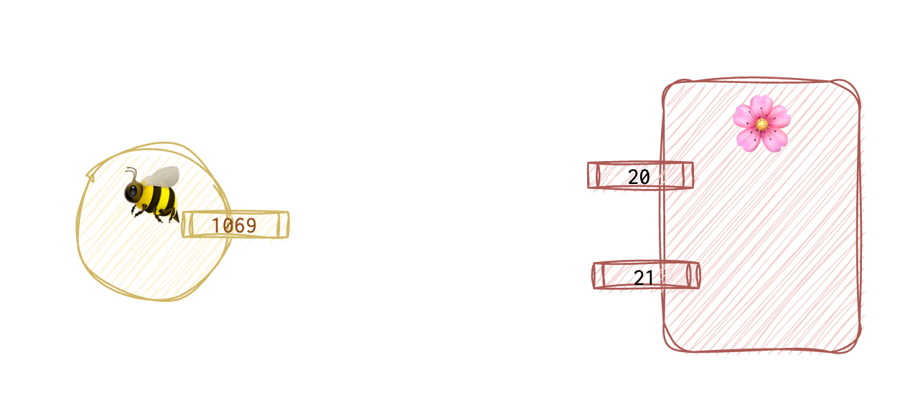
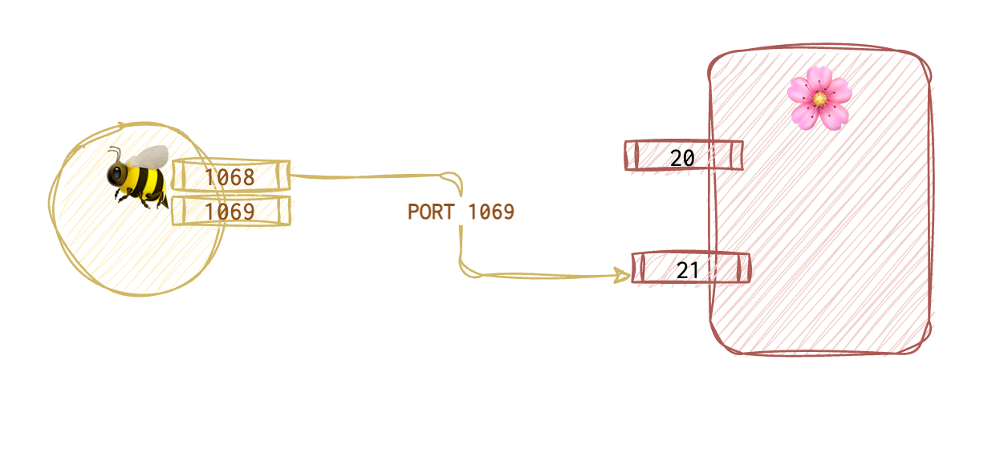
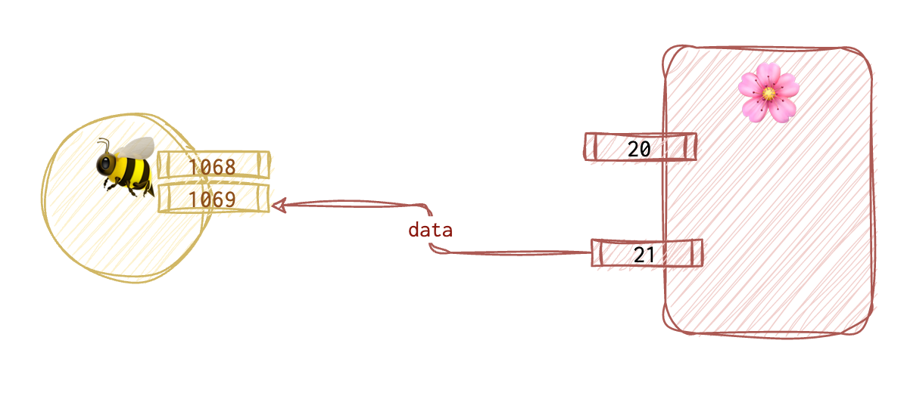
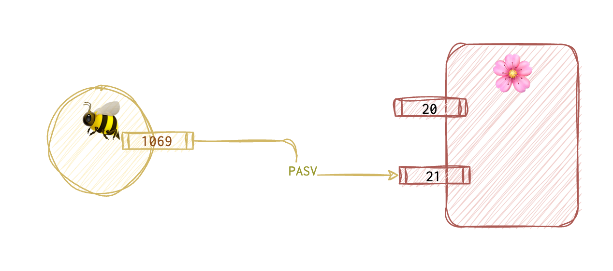
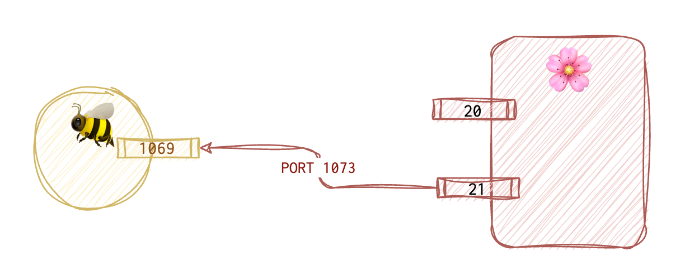
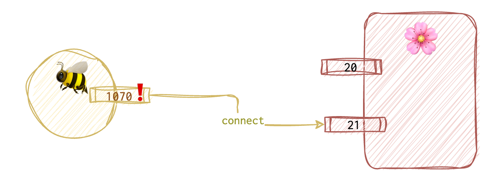
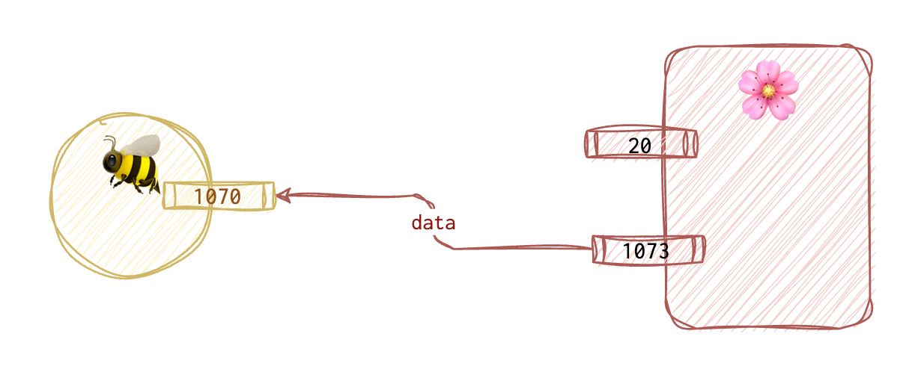

This is about … .
FTP
Port 20: for data exchange Port 21: establishing connection and command channel
Active mode
No firewall in between. The server initiates a connection for data transfer. That means more risk for the client.
Steps
Client 🐝 opens a port, say, 1069.

The client 🐝 then informs the server 🌸 via the PORT 1069 command over the server’s 21st port.

The server connects to this port and sends the data from its 20th port.

Why is it more risky for the client? Because the client 🐝 is open for connections for some time. Most often, the firewall blocks most of the connections not initiated by the client. To allow this mode to work, one must allow the inbound connection, which might be risky. Also, the client 🐝 is sharing its IP address and port number. What if the server is not untrusted? What if these requests are logged somewhere?
Passive mode
This mode is usually used when the client 🐝 has a firewall that blocks incoming connections. It means less risk for the client and more risk for the server 🌸.
Steps
The client 🐝 sends a PASV to the 21st port of the server 🌸 basically saying “I want to use the passive mode”.
 


📘 BTFM
ABOR
LIST
DELE
MKD
PWD
QUIT
...
📕 RTFM
brew unlink telnet # for macOS if the telnet was already installed
brew install inetutils
ftp <IP>
# When prompted for the username, type
anonymous
# for password just hit Enter
# on macOS let gftp to accept incoming connection or else you won't be able to browse the FTP server. The server will respond with 200 PORT command successful. Consider using PASV, then hanging for a while and then puking the 425 Failed to establish connection. message.
ls # browse
get # get file